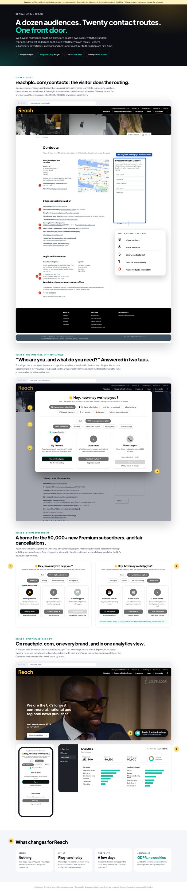
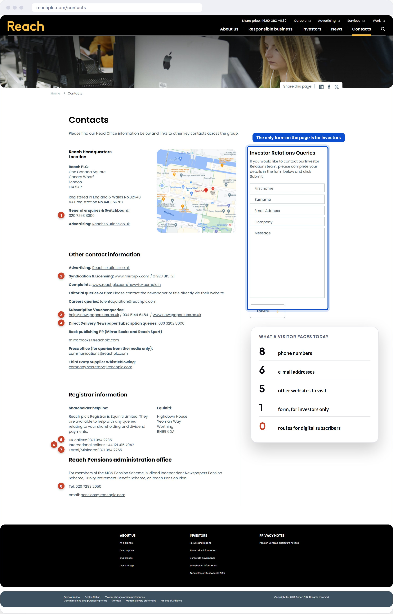
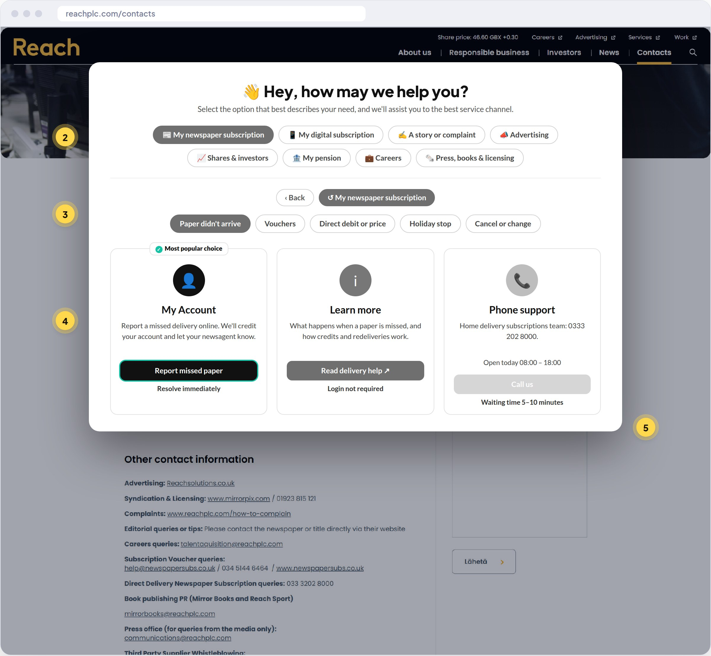
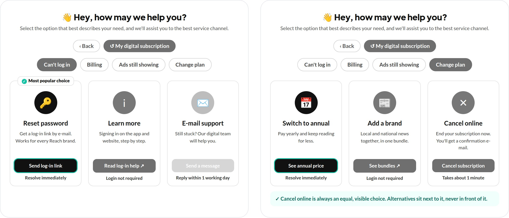

Reader & subscriber help · review, concept & business case
Every reader, to the right place, first time.
How one reChanneld front door can serve Reach's growing subscriber base across reachplc.com and 19+ subscription brands, with no redesign, no new systems, and a measurable 8-week pilot.
Reach has done something few publishers manage: more than 50,000 paying digital subscribers in under nine months, on top of 65,000+ print, e-edition and newsletter subscribers. With 25 brands selling subscriptions by October and a new Customer division bringing print and digital together, readers are fast becoming customers, and customers have questions.
We looked at where those questions go today. reachplc.com/contacts serves a dozen audiences with eight phone numbers, six e-mail addresses and five other websites. Its only form is for investors, and it has no route for digital subscribers at all. On the print side, Reachsubs scores 2.5/5 on Trustpilot, and the reviews describe missed papers, unexplained direct-debit increases and phones nobody answers.
reChanneld is channel-strategy software from Helsinki. Its plug-and-play widget asks visitors what they need and shows them the best channel for it, with self-service first and honest opening hours and waiting times. It sits on top of the pages and systems you already have.
This pack contains:
1
Audit
Every contact route on reachplc.com mapped by audience, plus 8 findings.
2
Concept
The real reChanneld widget on your real pages, configured with Reach's own topics.
3
Business case
A cost model, readiness for the 2027 subscription rules, and an 8-week pilot.
We'd welcome 20 minutes with you or the subscriptions team to walk through it.
Kind regards,
Touko Laakkonen
Service Channel Strategy, reChanneld · [e-mail] · [phone]
RECHANNELD · for Reach plc2
02 · Reach today
From audience scale to paying customers
The UK's largest commercial national and regional news publisher is moving its centre of gravity from page views to subscribers.
£232.9 MH1 2026 revenue (−9%)
76%of revenue still from print (£178 M)
−55%Google referrals, H1 2026 vs H1 2025
−10%adjusted operating costs, H1 2026
50,000+paid digital subscribers (Aug 2026), target 75,000 by year-end
65,000+print, e-edition and paid newsletter subscribers
19 → 25brands selling subscriptions, by October
£1.99–6.99a month, e.g. Mirror+ £3.99, MEN £4.99, Express £6.99
2026 so far
MarFY 2025: revenue £518.4 M, adjusted operating profit up 2.4% to £104.7 M. Priorities: video, tech & AI, and subscriptions.
Q2Print volumes −23%, after another cover-price rise, against a usual 17–20% decline.
JunGeorge Grist named Chief Customer Officer of a new Customer division covering print circulation, digital subscriptions, e-commerce and the US business.
JulH1 results: margin up to 18.5%; 40,000+ subscribers across 15 brands.
Aug50,000 paid digital subscribers in under nine months. Bundles across national and local brands in development.
SepEditorial restructure. “Active engaged time” becomes the north-star metric instead of page views.
What this means for reader help
More customers, more questions. Every new subscriber brings log-in, billing and plan questions. Contact volumes grow with success.
Two customer bases, one division. Print customers (deliveries, vouchers, direct debits) and digital customers (log-in, ad-lite, plans) now sit under one Customer team.
Price rises create contacts. Cover-price and subscription increases bring “why did my payment go up?” questions, and those affect churn.
Costs must keep falling. Contacts need to be handled better without adding staff.
The opportunity: give every subscriber a clear front door now, while the subscriber base is still being built.
Sources: Reach plc FY 2025 and H1 2026 results and presentations; Reach and Reach Solutions (50,000 subscribers, Aug 2026); Press Gazette, HoldtheFrontPage, InPublishing, A Media Operator, Behind Local News. Figures as reported; please correct us where needed.
RECHANNELD · for Reach plc3
02 · Why now, and for whom
Four reasons to act this quarter
1
Subscribers are becoming the business
The goal is 75,000 digital subscribers by year-end and “more into 2027”, with bundles on the way. Keeping subscribers is now as important as winning them, and every frustrated contact is a churn risk.
2
A new Customer division is being built
Print circulation, digital subscriptions and e-commerce have just come together under one Chief Customer Officer. This is the moment to design a single front door, before each brand and team builds its own.
3
New UK subscription rules from January 2027
The DMCC Act's subscription regime requires straightforward cancellation, cooling-off periods and renewal reminders. Clear, honest help routes, including how to cancel, are becoming a compliance matter, not just good service.
4
Costs are falling, and the readers who remain matter more
Operating costs are down 10% and print volumes are falling faster after price rises. Self-service has to carry more of the load, without leaving loyal, often older, print readers stranded.
Who this is for
Executive sponsorGeorge GristChief Customer Officer, since June 2026
Owns print circulation and digital subscriptions together. reChanneld gives his new division one front door and one shared view of what readers need.
Subscriptions growthDavid BartlettHead of Growth (to confirm)
Is launching bundles and paid newsletters. reChanneld routes plan-change and upgrade questions to the right offer.
Print customersCirculation / Reachsubs leadFind on LinkedIn
Missed papers, vouchers and direct debits. These are the highest-volume, most fixable contacts.
Corporate site ownerCorporate communicationsreachplc.com
The contacts page serves a dozen audiences. A single widget tidies it up without a redesign.
RECHANNELD · for Reach plc4
03 · Contact journey audit
reachplc.com/contacts, line by line
Every contact route on the page on 2 October 2026, grouped by who it's for.
The default for anyone unsure, which means the most expensive route
8 phone numbers · 6 e-mail addresses · 5 other websites · 1 form · 0 routes for digital subscribers. The visitor does all the routing.
RECHANNELD · for Reach plc5
03 · Contact journey audit, continued
8 findings
2/10Digital subscriber help
3/10Clear routing
4/10Print subscriber help
5/10Opening hours shown
8/10Investor & B2B routes
01
No route for digital subscribers Critical
The fastest-growing customer group, over 50,000 people paying £1.99–6.99 a month, isn't mentioned on the group contacts page.
A “My digital subscription” topic: log-in, billing, ad-lite and plan changes.
02
The visitor has to do the routing Critical
Twenty routes for a dozen audiences on one long page. Anyone unsure calls the switchboard.
One question first: “What can we help with?”, then only the routes that apply.
03
Print subscribers report missed papers and unanswered phones High
Reachsubs scores 2.5/5 on Trustpilot. Reviews mention papers missing two or three times a week, direct debits rising by about 10% without explanation, calls cut off, and e-mails unanswered for a month.
Route “paper didn't arrive” and “why did my payment change?” to instant self-service and clear explanations first.
04
Three subscription brands, one customer High
Reach, Newspapersubs and Reachsubs all appear. Readers don't know which one manages their subscription.
The widget asks about the reader's subscription, not about Reach's internal brands.
05
No opening hours or waiting times Medium
None of the subscriber phone lines show when they're open or how busy they are.
Show today's hours and the typical waiting time on every phone option.
06
Price-rise questions have no home Medium
Three cover-price rises in 2025 and more in 2026 mean many “why did I pay more?” contacts.
A “Direct debit or price” topic, with a clear explanation first and a person second.
07
Cancellation isn't signposted Medium
From January 2027, UK rules require subscriptions to be easy to cancel. There's no visible route on the page today.
“Cancel or change” as an equal choice, with pause and switch options next to it.
08
No insight into what readers need Low
With routes spread across phones, inboxes and other sites, nobody sees the full picture of contact reasons.
One analytics view: topics, channels and brands, in real time.
Sources: reachplc.com/contacts (2 Oct 2026); Trustpilot (Reachsubs); Reach results. Scores are our view.
RECHANNELD · for Reach plc6
04 · reChanneld on your site

Your pages, exactly as they are. Plus one front door.
Screenshots of reachplc.com as it is today, with the standard reChanneld widget added and configured with Reach's own topics. The full page is in reChanneld-Reach-Concept.pdf, and each yellow number matches a note below.
1
Today: 8 phone numbers, 6 e-mail addresses, 5 other websites and 1 investor form, with no route for digital subscribers. Findings 01 and 02.
2
First question: who are you? Eight first-level topics cover every audience on the page: newspaper subscription, digital subscription, story or complaint, advertising, investors, pension, careers, press.
3
Then: what do you need? Sub-topics such as Paper didn't arrive, Vouchers, Direct debit or price, Holiday stop and Cancel or change. Findings 03, 04 and 06.
4
“Most popular choice”. Self-service is highlighted first, here “Report missed paper”, marked “Resolve immediately”.
5
Phone, honestly. The right number for that need, with today's opening hours and the typical waiting time. Finding 05.
6
Digital subscribers get a home. Can't log in, billing, ads still showing and change plan, valid for every Reach brand. Finding 01.
7
Change plan, fairly. Switch to annual, add a brand (bundles), or cancel online as an equal choice. Finding 07, ready for 2027.
8
A “Reader & subscriber help” button on the reachplc.com homepage, which today speaks only to investors and partners.
9
Every brand, one analytics view. The same widget on the Mirror, Express, MEN and others, with sessions, topics and brands in one place. Finding 08.
10
What changes: no design changes, a plug-and-play widget, live in a few days, GDPR compliant with no cookies.
Why no redesign
reachplc.com is a well-built corporate site for many audiences. reChanneld adds the missing customer path on top, so it can go live in days and expand brand by brand.
RECHANNELD · for Reach plc7
04 · Before and after
The same page, two very different experiences

Today: twenty routes to read through

With reChanneld: two taps to the right route

Digital subscribers: log-in help, and plan changes with cancel as an equal choice
RECHANNELD · for Reach plc8
05 · Topic map
Proposed starting configuration
Eight first-level topics, each with sub-topics and a recommended channel. Built from public information; in a pilot, your own contact data decides the final structure and wording.
📰 My newspaper subscription
Paper didn't arrive Self-service
Vouchers Self-service
Direct debit or price Article → phone
Holiday stop Self-service
Cancel or change Options, equal
📱 My digital subscription
Can't log in Self-service
Billing My Account
Ads still showing Article
Change plan / bundle Self-service
Cancel Options, equal
✍️ A story or complaint
I have a story or tip Brand newsdesk form
Correct an article Complaints form
Formal complaint How to complain
Remove my details Form → team
📣 Advertising
Advertise nationally Reach Solutions
Local business ad Reach Solutions
Notices (family, legal) Brand page
Licensing & photos Mirrorpix
📈 Shares & investors
My shareholding Equiniti
Results & reports Investor pages
Investor relations IR form
🏦 My pension
Scheme information Pension pages
Contact the pensions office E-mail → phone
💼 Careers
Current vacancies Careers site
Application question E-mail
🗞️ Press, books & other
Media enquiry Press office
Mirror Books / Reach Sport E-mail
Supplier whistleblowing Company secretary
Something else Switchboard
Several configurations
One configuration for reachplc.com covers all audiences. Brand sites such as the Mirror, Express and MEN get a reader-only configuration with that brand's own subscription topics.
Managed by the Customer team
Topics, texts, buttons, hours and the “Most popular choice” are edited in reChanneld's cloud admin panel and change instantly, without IT tickets or releases.
RECHANNELD · for Reach plc9
06 · Subscription rules 2027
Easy to cancel, still good at keeping
From January 2027 the UK's new subscription contracts regime, under the Digital Markets, Competition and Consumers Act 2024, applies to subscriptions like Reach's.
What the regime requires (in summary)
Easy exit. Consumers can end a contract with a clear statement, without unnecessary steps.
Cooling-off. A 14-day cooling-off period at the start, and again after renewal.
Reminders. Notices before renewals and before a free or discounted period ends.
Consequences. Missing duties can give consumers the right to cancel and claim refunds.
A summary based on public guidance, not legal advice. Your legal team will have the details.
How a front door helps
Cancel is visible. “Cancel or change” is a standard topic on every brand, never hidden.
Equal choices. Pause, switch to annual or add a brand appear next to cancel, not in front of it, so retention stays fair.
Reminder follow-up. Renewal e-mails link to the widget's “My renewal” topic, so questions land in self-service, not the phone queue.
Evidence. Analytics show how many people chose each option, which helps the Customer team show the journey works.
Retention by service, not by friction: readers who only wanted a break or a cheaper plan find it in one tap, and those who want to leave can.
Sources: Department for Business and Trade consultation response (Apr 2026) and law-firm summaries (CMS, DWF). Commencement January 2027 as reported.
RECHANNELD · for Reach plc10
07 · Business case
A simple cost model to fill in together
We don't know Reach's contact volumes, so this is a worked example with clearly stated assumptions. In the first call we'd replace them with your real figures.
Cost per assisted contact (reChanneld's ROI basis: €5)
≈ £4.30
Annual saving, subscriber contacts only
≈ £72,000
Excludes switchboard, advertiser and investor routing, retention effects and the value of agent time freed for complex cases.
Where the value comes from
Fewer assisted contacts. Missed papers, log-in and billing questions move to self-service.
Faster help for those who call. Shorter queues for complex cases and readers who need a person.
Lower avoidable churn. Frustrated subscribers leave. A fixed problem keeps the subscription.
Insight. Real-time data on what readers need, by brand, for the Customer and product teams.
reChanneld's own benchmark
On reChanneld's published plans, ROI is reached by nudging around 5% of traffic, assuming €5 per contact. Clients typically see 79% of channel selections go to self-service, automation and leads.
Retention matters more than savings: at £4.99 a month, every 1,000 subscribers kept is worth about £60,000 a year.
RECHANNELD · for Reach plc11
07 · 8-week pilot
Prove it on two pages, with your own data
Suggested scope: reachplc.com/contacts (all audiences) and the Manchester Evening News, Reach's first Premium brand, for digital and print subscribers.
Weeks 1–2Map
Review three months of contact reasons from Reachsubs and digital support. Agree topics, channels and wording, and set the baseline. The widget can be live within days.
Weeks 3–8Guide
Widget live on both pages, linked from subscriber e-mails. Wording and recommended channels adjusted weekly from the analytics.
Week 9Decide
Review results together, then a brand-by-brand rollout plan for the remaining subscription brands.
What we'll measure
KPI
How
Calls and e-mails per 1,000 subscribers
Your data, before vs during
Switchboard calls
Your data, before vs during
Top channels chosen per topic
reChanneld analytics
Finished sessions
reChanneld analytics
Cancel-topic choices (pause, switch, cancel)
reChanneld analytics
Trustpilot themes
Review trend
Who does what
reChanneld
Configuration, topics and copy
Analytics access and weekly check-ins
Final report and rollout plan
Reach
One Customer-team contact, about 2 hours a week
Contact-reason data and current help links
Adding the widget to the two pages
No redesign, no new chatbot and no change to subscription platforms. If it doesn't show results in 8 weeks, you stop.
RECHANNELD · for Reach plc12
07 · Launch support
“Welcome to Premium”: a 40-second onboarding video
Most log-in and “ads still showing” contacts happen in a subscriber's first week. A short welcome video in the confirmation e-mail and app shows how to sign in on every device and where to get help, before the questions start. It's made once, with an end card for each brand.
0:00–0:06🎉 “You're in!” Brand logo + Premium badge
Visual A confirmation screen lights up.
“Welcome to Premium. Thanks for backing local journalism.”
0:06–0:16📱💻 Sign in once on each device
Visual Phone, laptop and tablet each show the sign-in.
“Sign in on each device you use, and the ad-lite experience follows you.”
0:16–0:24✨ Ad-lite · exclusives · newsletters
Visual A quick tour of the benefits.
“Fewer ads, exclusive stories, and newsletters made for you.”
0:24–0:32👋 “Hey, how may we help you?”
Visual The reChanneld widget opens: Can't log in → Send log-in link.
“Any questions? Our help button gets you sorted in seconds.”
0:32–0:36📅 Your plan, your choice
Visual Change plan: annual, bundle, or cancel.
“Change or cancel any time. It's all in one place.”
0:36–0:40[Brand] Premium Help: one tap away
Visual End card in the brand's colours.
“Enjoy reading.”
Formats
9:16 for the app and social, 16:9 for web, plus a GIF and a 15-second cut for e-mails. Captioned throughout.
One master, 25 brands
Voice-over and end cards adapt per brand: Mirror+, Express Premium, MEN Premium, Echo, Record and more.
RECHANNELD · for Reach plc13
About reChanneld
Better choices. Happier customers. Lower costs.
The reChanneld widget as it works today: topic, sub-topic, channel cards and the “Most popular choice”.
reChanneld is a channel strategy platform from Helsinki, Finland. A plug-and-play widget uses behavioural economics and digital nudges to guide customers to the best service channel. Customer service teams manage it themselves in a cloud admin panel, and it works on top of their existing website and channels.
4M+annual sessions
79%channel selections to self-service, automation and leads
87%of end users found reChanneld easy and clear
Daysto define and implement a channel strategy
“Within just a few days we were able to nail our service channel strategy with reChanneld. Nudges work excellently, and we offer a far more intuitive experience to our customers than before!”
Teresa Alander, Head of Operations, Lippu.fi (part of CTS Eventim)
Used by
S-Bank, Nets, Lippu.fi, PAM, Sportson, Laurea, Varha and Satakunta wellbeing services county. They cover banking, payments, ticketing, retail, education and the public sector.
Enterprise-ready
Audited for security and accessibility, GDPR compliant, no cookies. White-labelled for each brand. Enterprise plan with unlimited admin users and integrations.
Shall we take 20 minutes?
We'd love to hear how reader and subscriber help works today, and where it hurts most.
Touko LaakkonenreChanneld · [e-mail] · [phone]
Figures, quote, plans and customer names from rechanneld.com (October 2026).